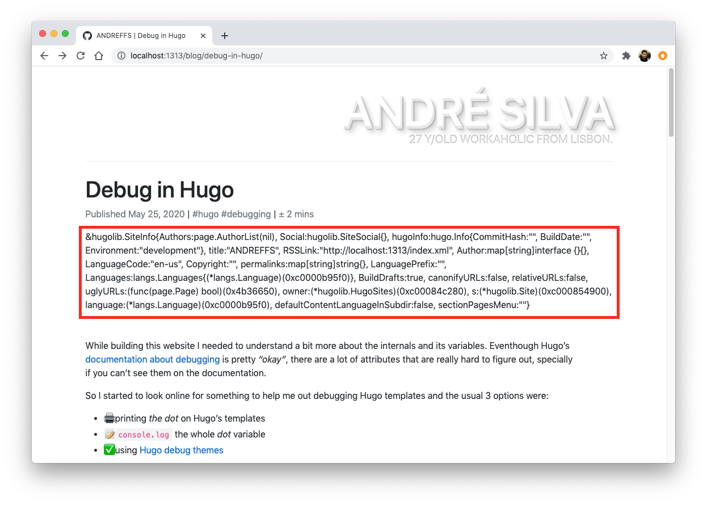
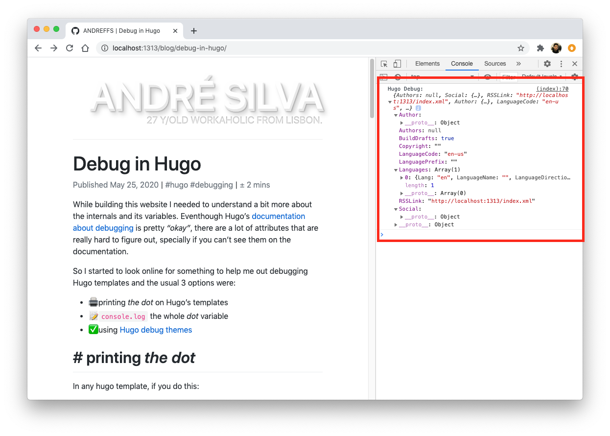
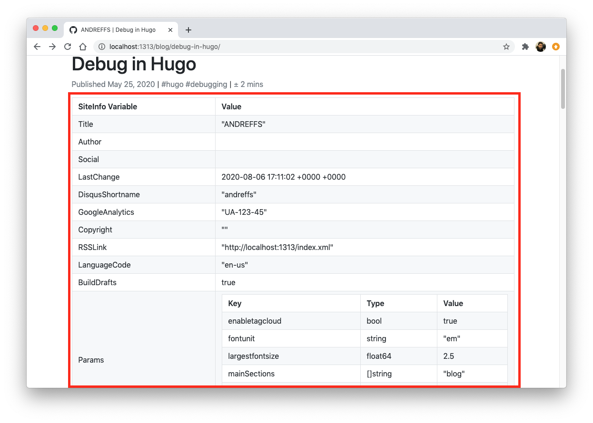

<!DOCTYPE html>
<html>
    <head>
    <meta name="generator" content="Hugo 0.67.1" />
    <meta charset="utf-8">
    <link rel="shortcut icon" href="https://www.andreffs.com/favicon.png">

    
    <meta name="viewport" content="width=device-width, initial-scale=1.0" />
    <title>ANDREFFS | Debug in Hugo</title>

    <meta name="author" content="">
    <meta name="description" content="">
    <link rel="canonical" href="https://www.andreffs.com/blog/debug-in-hugo/">

    
    <link href="https://stackpath.bootstrapcdn.com/font-awesome/4.7.0/css/font-awesome.min.css" rel="stylesheet" integrity="sha384-wvfXpqpZZVQGK6TAh5PVlGOfQNHSoD2xbE+QkPxCAFlNEevoEH3Sl0sibVcOQVnN" crossorigin="anonymous">
    
    <link rel="stylesheet" href="https://cdnjs.cloudflare.com/ajax/libs/github-markdown-css/4.0.0/github-markdown.min.css">
    
    <link rel="stylesheet" type="text/css" href="//cdn.jsdelivr.net/npm/slick-carousel@1.8.1/slick/slick.css"/>
    
    <link rel="stylesheet" href="https://stackpath.bootstrapcdn.com/bootstrap/4.3.1/css/bootstrap.min.css" integrity="sha384-ggOyR0iXCbMQv3Xipma34MD+dH/1fQ784/j6cY/iJTQUOhcWr7x9JvoRxT2MZw1T" crossorigin="anonymous">
    <script src="https://code.jquery.com/jquery-3.3.1.slim.min.js" integrity="sha384-q8i/X+965DzO0rT7abK41JStQIAqVgRVzpbzo5smXKp4YfRvH+8abtTE1Pi6jizo" crossorigin="anonymous"></script>
    <script src="https://cdnjs.cloudflare.com/ajax/libs/popper.js/1.14.7/umd/popper.min.js" integrity="sha384-UO2eT0CpHqdSJQ6hJty5KVphtPhzWj9WO1clHTMGa3JDZwrnQq4sF86dIHNDz0W1" crossorigin="anonymous"></script>
    <script src="https://stackpath.bootstrapcdn.com/bootstrap/4.3.1/js/bootstrap.min.js" integrity="sha384-JjSmVgyd0p3pXB1rRibZUAYoIIy6OrQ6VrjIEaFf/nJGzIxFDsf4x0xIM+B07jRM" crossorigin="anonymous"></script>

    
    <link rel="stylesheet" type="text/css" href="https://www.andreffs.com/css/main.min.2623349fa9762b7582fc7ec2ace6404ca36556bc5dae11d474e5b870e0d3d1f3.css">
</head>

    <body>
        <div class="container pb-5">
            <header>
    <div class="page-header pb-4 mt-5 mb-4">
        
            <a href="https://www.andreffs.com" class="text-decoration-none">
                <h1 class="text3d text-right text-uppercase"><span id="">André Silva</span><br/></h1>
            </a>
            <small class="letterpress text-right text-uppercase">28 y/old workaholic from Lisbon.</small>
        
    </div>
</header>
            

<main class="row blog">
    <section>
        <header>
            <h1 class="">Debug in Hugo</h1>

            

            <a class="text-muted mt-3">
                <a class="text-muted" href="https://www.andreffs.com/blog/debug-in-hugo/">Published May 25, 2020</a>

                
                    <span>|</span>
                    
                    <a class="text-muted" href="https://www.andreffs.com/tags/hugo">#hugo</a>
                    
                    <a class="text-muted" href="https://www.andreffs.com/tags/debugging">#debugging</a>
                    
                
                <span>|</span>
                <a class="text-muted text-decoration-none">± 3 mins</a>
            </p>
        </header>
        <article class="markdown-body">
            <p>While building this website I needed to understand a bit more about the internals and its variables. Even though Hugo&rsquo;s <a href="https://gohugo.io/templates/template-debugging/">documentation about debugging</a> is pretty <em>&ldquo;okay&rdquo;</em>, there are a lot of attributes that are really hard to figure out, specially if you can&rsquo;t see them on the documentation.</p>
<p>So I started to look online for something to help me out debugging Hugo templates and the usual 3 options were:</p>
<ul>
<li>🖨 printing <em>the dot</em> on Hugo&rsquo;s templates</li>
<li>📝 <code>console.log</code> the whole <em>dot</em> variable</li>
<li>✅ using <a href="https://github.com/kaushalmodi/hugo-debugprint">Hugo debug themes</a></li>
</ul>
<h1 id="printing-_the-dot_">Printing <em>&ldquo;the dot&rdquo;</em></h1>
<p>In any hugo template, if you do this:</p>
<div class="highlight"><div style="color:#f8f8f2;background-color:#272822;-moz-tab-size:4;-o-tab-size:4;tab-size:4">
<table style="border-spacing:0;padding:0;margin:0;border:0;width:auto;overflow:auto;display:block;"><tr><td style="vertical-align:top;padding:0;margin:0;border:0;">
<pre style="color:#f8f8f2;background-color:#272822;-moz-tab-size:4;-o-tab-size:4;tab-size:4"><code><span style="margin-right:0.4em;padding:0 0.4em 0 0.4em;color:#7f7f7f">1
</span></code></pre></td>
<td style="vertical-align:top;padding:0;margin:0;border:0;;width:100%">
<pre style="color:#f8f8f2;background-color:#272822;-moz-tab-size:4;-o-tab-size:4;tab-size:4"><code class="language-html" data-lang="html">{{ printf &#34;%#v&#34; . }}
</code></pre></td></tr></table>
</div>
</div><p>You&rsquo;ll get something like this:</p>
<p></p>
<p>Which to be honest is not the best dev friendly output to figure out what can you use. Also, it hides a lot of variables that you have access to, for example, printing the <code>site</code> variable only shows this:</p>
<div class="highlight"><div style="color:#f8f8f2;background-color:#272822;-moz-tab-size:4;-o-tab-size:4;tab-size:4">
<table style="border-spacing:0;padding:0;margin:0;border:0;width:auto;overflow:auto;display:block;"><tr><td style="vertical-align:top;padding:0;margin:0;border:0;">
<pre style="color:#f8f8f2;background-color:#272822;-moz-tab-size:4;-o-tab-size:4;tab-size:4"><code><span style="margin-right:0.4em;padding:0 0.4em 0 0.4em;color:#7f7f7f"> 1
</span><span style="margin-right:0.4em;padding:0 0.4em 0 0.4em;color:#7f7f7f"> 2
</span><span style="margin-right:0.4em;padding:0 0.4em 0 0.4em;color:#7f7f7f"> 3
</span><span style="margin-right:0.4em;padding:0 0.4em 0 0.4em;color:#7f7f7f"> 4
</span><span style="margin-right:0.4em;padding:0 0.4em 0 0.4em;color:#7f7f7f"> 5
</span><span style="margin-right:0.4em;padding:0 0.4em 0 0.4em;color:#7f7f7f"> 6
</span><span style="margin-right:0.4em;padding:0 0.4em 0 0.4em;color:#7f7f7f"> 7
</span><span style="margin-right:0.4em;padding:0 0.4em 0 0.4em;color:#7f7f7f"> 8
</span><span style="margin-right:0.4em;padding:0 0.4em 0 0.4em;color:#7f7f7f"> 9
</span><span style="margin-right:0.4em;padding:0 0.4em 0 0.4em;color:#7f7f7f">10
</span><span style="margin-right:0.4em;padding:0 0.4em 0 0.4em;color:#7f7f7f">11
</span><span style="margin-right:0.4em;padding:0 0.4em 0 0.4em;color:#7f7f7f">12
</span><span style="margin-right:0.4em;padding:0 0.4em 0 0.4em;color:#7f7f7f">13
</span><span style="margin-right:0.4em;padding:0 0.4em 0 0.4em;color:#7f7f7f">14
</span><span style="margin-right:0.4em;padding:0 0.4em 0 0.4em;color:#7f7f7f">15
</span><span style="margin-right:0.4em;padding:0 0.4em 0 0.4em;color:#7f7f7f">16
</span><span style="margin-right:0.4em;padding:0 0.4em 0 0.4em;color:#7f7f7f">17
</span><span style="margin-right:0.4em;padding:0 0.4em 0 0.4em;color:#7f7f7f">18
</span><span style="margin-right:0.4em;padding:0 0.4em 0 0.4em;color:#7f7f7f">19
</span><span style="margin-right:0.4em;padding:0 0.4em 0 0.4em;color:#7f7f7f">20
</span><span style="margin-right:0.4em;padding:0 0.4em 0 0.4em;color:#7f7f7f">21
</span><span style="margin-right:0.4em;padding:0 0.4em 0 0.4em;color:#7f7f7f">22
</span><span style="margin-right:0.4em;padding:0 0.4em 0 0.4em;color:#7f7f7f">23
</span><span style="margin-right:0.4em;padding:0 0.4em 0 0.4em;color:#7f7f7f">24
</span><span style="margin-right:0.4em;padding:0 0.4em 0 0.4em;color:#7f7f7f">25
</span><span style="margin-right:0.4em;padding:0 0.4em 0 0.4em;color:#7f7f7f">26
</span><span style="margin-right:0.4em;padding:0 0.4em 0 0.4em;color:#7f7f7f">27
</span></code></pre></td>
<td style="vertical-align:top;padding:0;margin:0;border:0;;width:100%">
<pre style="color:#f8f8f2;background-color:#272822;-moz-tab-size:4;-o-tab-size:4;tab-size:4"><code class="language-go" data-lang="go"><span style="color:#75715e">// {{ printf &#34;%#v&#34; site }}
</span><span style="color:#75715e"></span><span style="color:#f92672">&amp;</span><span style="color:#a6e22e">hugolib</span>.<span style="color:#a6e22e">SiteInfo</span>{
	<span style="color:#a6e22e">Authors</span>:<span style="color:#a6e22e">page</span>.<span style="color:#a6e22e">AuthorList</span>(<span style="color:#66d9ef">nil</span>),
	<span style="color:#a6e22e">Social</span>:<span style="color:#a6e22e">hugolib</span>.<span style="color:#a6e22e">SiteSocial</span>{},
	<span style="color:#a6e22e">hugoInfo</span>:<span style="color:#a6e22e">hugo</span>.<span style="color:#a6e22e">Info</span>{
		<span style="color:#a6e22e">CommitHash</span>:<span style="color:#e6db74">&#34;&#34;</span>,
		<span style="color:#a6e22e">BuildDate</span>:<span style="color:#e6db74">&#34;&#34;</span>,
		<span style="color:#a6e22e">Environment</span>:<span style="color:#e6db74">&#34;development&#34;</span>
	},
	<span style="color:#a6e22e">title</span>:<span style="color:#e6db74">&#34;ANDREFFS&#34;</span>,
	<span style="color:#a6e22e">RSSLink</span>:<span style="color:#e6db74">&#34;http://localhost:1313/index.xml&#34;</span>,
	<span style="color:#a6e22e">Author</span>:<span style="color:#66d9ef">map</span>[<span style="color:#66d9ef">string</span>]<span style="color:#66d9ef">interface</span> {}{},
	<span style="color:#a6e22e">LanguageCode</span>:<span style="color:#e6db74">&#34;en-us&#34;</span>,
	<span style="color:#a6e22e">Copyright</span>:<span style="color:#e6db74">&#34;&#34;</span>,
	<span style="color:#a6e22e">permalinks</span>:<span style="color:#66d9ef">map</span>[<span style="color:#66d9ef">string</span>]<span style="color:#66d9ef">string</span>{},
	<span style="color:#a6e22e">LanguagePrefix</span>:<span style="color:#e6db74">&#34;&#34;</span>,
	<span style="color:#a6e22e">Languages</span>:<span style="color:#a6e22e">langs</span>.<span style="color:#a6e22e">Languages</span>{(<span style="color:#f92672">*</span><span style="color:#a6e22e">langs</span>.<span style="color:#a6e22e">Language</span>)(<span style="color:#ae81ff">0xc0000b95f0</span>)},
	<span style="color:#a6e22e">BuildDrafts</span>:<span style="color:#66d9ef">true</span>,
	<span style="color:#a6e22e">canonifyURLs</span>:<span style="color:#66d9ef">false</span>,
	<span style="color:#a6e22e">relativeURLs</span>:<span style="color:#66d9ef">false</span>,
	<span style="color:#a6e22e">uglyURLs</span>:(<span style="color:#66d9ef">func</span>(<span style="color:#a6e22e">page</span>.<span style="color:#a6e22e">Page</span>) <span style="color:#66d9ef">bool</span>)(<span style="color:#ae81ff">0x4b36650</span>),
	<span style="color:#a6e22e">owner</span>:(<span style="color:#f92672">*</span><span style="color:#a6e22e">hugolib</span>.<span style="color:#a6e22e">HugoSites</span>)(<span style="color:#ae81ff">0xc00084c280</span>),
	<span style="color:#a6e22e">s</span>:(<span style="color:#f92672">*</span><span style="color:#a6e22e">hugolib</span>.<span style="color:#a6e22e">Site</span>)(<span style="color:#ae81ff">0xc000854900</span>),
	<span style="color:#a6e22e">language</span>:(<span style="color:#f92672">*</span><span style="color:#a6e22e">langs</span>.<span style="color:#a6e22e">Language</span>)(<span style="color:#ae81ff">0xc0000b95f0</span>),
	<span style="color:#a6e22e">defaultContentLanguageInSubdir</span>:<span style="color:#66d9ef">false</span>,
	<span style="color:#a6e22e">sectionPagesMenu</span>:<span style="color:#e6db74">&#34;&#34;</span>
}
</code></pre></td></tr></table>
</div>
</div><p>When you also have access to <code>site.Params</code>, which is not showing on the above output:</p>
<div class="highlight"><div style="color:#f8f8f2;background-color:#272822;-moz-tab-size:4;-o-tab-size:4;tab-size:4">
<table style="border-spacing:0;padding:0;margin:0;border:0;width:auto;overflow:auto;display:block;"><tr><td style="vertical-align:top;padding:0;margin:0;border:0;">
<pre style="color:#f8f8f2;background-color:#272822;-moz-tab-size:4;-o-tab-size:4;tab-size:4"><code><span style="margin-right:0.4em;padding:0 0.4em 0 0.4em;color:#7f7f7f">1
</span><span style="margin-right:0.4em;padding:0 0.4em 0 0.4em;color:#7f7f7f">2
</span><span style="margin-right:0.4em;padding:0 0.4em 0 0.4em;color:#7f7f7f">3
</span><span style="margin-right:0.4em;padding:0 0.4em 0 0.4em;color:#7f7f7f">4
</span><span style="margin-right:0.4em;padding:0 0.4em 0 0.4em;color:#7f7f7f">5
</span><span style="margin-right:0.4em;padding:0 0.4em 0 0.4em;color:#7f7f7f">6
</span><span style="margin-right:0.4em;padding:0 0.4em 0 0.4em;color:#7f7f7f">7
</span><span style="margin-right:0.4em;padding:0 0.4em 0 0.4em;color:#7f7f7f">8
</span><span style="margin-right:0.4em;padding:0 0.4em 0 0.4em;color:#7f7f7f">9
</span></code></pre></td>
<td style="vertical-align:top;padding:0;margin:0;border:0;;width:100%">
<pre style="color:#f8f8f2;background-color:#272822;-moz-tab-size:4;-o-tab-size:4;tab-size:4"><code class="language-go" data-lang="go"><span style="color:#75715e">// {{ printf &#34;%#v&#34; site.Params }}
</span><span style="color:#75715e"></span><span style="color:#a6e22e">maps</span>.<span style="color:#a6e22e">Params</span>{
  <span style="color:#e6db74">&#34;enabletagcloud&#34;</span>:<span style="color:#66d9ef">true</span>,
  <span style="color:#e6db74">&#34;fontunit&#34;</span>:<span style="color:#e6db74">&#34;em&#34;</span>,
  <span style="color:#e6db74">&#34;largestfontsize&#34;</span>:<span style="color:#ae81ff">2.5</span>,
  <span style="color:#e6db74">&#34;mainSections&#34;</span>:[]<span style="color:#66d9ef">string</span>{<span style="color:#e6db74">&#34;blog&#34;</span>},
  <span style="color:#e6db74">&#34;mainsections&#34;</span>:[]<span style="color:#66d9ef">string</span>{<span style="color:#e6db74">&#34;blog&#34;</span>},
  <span style="color:#e6db74">&#34;smallestfontsize&#34;</span>:<span style="color:#ae81ff">1</span>
}
</code></pre></td></tr></table>
</div>
</div><h1 id="consolelog-everything">Console.log everything</h1>
<p>In your html files, put a snippet like the following:</p>
<div class="highlight"><div style="color:#f8f8f2;background-color:#272822;-moz-tab-size:4;-o-tab-size:4;tab-size:4">
<table style="border-spacing:0;padding:0;margin:0;border:0;width:auto;overflow:auto;display:block;"><tr><td style="vertical-align:top;padding:0;margin:0;border:0;">
<pre style="color:#f8f8f2;background-color:#272822;-moz-tab-size:4;-o-tab-size:4;tab-size:4"><code><span style="margin-right:0.4em;padding:0 0.4em 0 0.4em;color:#7f7f7f">1
</span><span style="margin-right:0.4em;padding:0 0.4em 0 0.4em;color:#7f7f7f">2
</span><span style="margin-right:0.4em;padding:0 0.4em 0 0.4em;color:#7f7f7f">3
</span><span style="margin-right:0.4em;padding:0 0.4em 0 0.4em;color:#7f7f7f">4
</span></code></pre></td>
<td style="vertical-align:top;padding:0;margin:0;border:0;;width:100%">
<pre style="color:#f8f8f2;background-color:#272822;-moz-tab-size:4;-o-tab-size:4;tab-size:4"><code class="language-html" data-lang="html">&lt;<span style="color:#f92672">script</span>&gt;
  <span style="color:#66d9ef">var</span> <span style="color:#a6e22e">hugoLog</span> <span style="color:#f92672">=</span> <span style="color:#a6e22e">JSON</span>.<span style="color:#a6e22e">parse</span>({{ <span style="color:#a6e22e">jsonify</span> . }});
  <span style="color:#a6e22e">console</span>.<span style="color:#a6e22e">log</span>(<span style="color:#e6db74">&#39;Hugo Debug: &#39;</span>, <span style="color:#a6e22e">hugoLog</span>);
&lt;/<span style="color:#f92672">script</span>&gt;
</code></pre></td></tr></table>
</div>
</div><p></p>
<p>This will log the same object that we had with the previous approach, but you can manipulate it on the browser&rsquo;s console tab. You can always move that snippet into a <a href="https://gohugo.io/content-management/shortcodes/">shortcode</a> and use it like this whenever you need to debug something. 🤔</p>
<div class="highlight"><div style="color:#f8f8f2;background-color:#272822;-moz-tab-size:4;-o-tab-size:4;tab-size:4">
<table style="border-spacing:0;padding:0;margin:0;border:0;width:auto;overflow:auto;display:block;"><tr><td style="vertical-align:top;padding:0;margin:0;border:0;">
<pre style="color:#f8f8f2;background-color:#272822;-moz-tab-size:4;-o-tab-size:4;tab-size:4"><code><span style="margin-right:0.4em;padding:0 0.4em 0 0.4em;color:#7f7f7f"> 1
</span><span style="margin-right:0.4em;padding:0 0.4em 0 0.4em;color:#7f7f7f"> 2
</span><span style="margin-right:0.4em;padding:0 0.4em 0 0.4em;color:#7f7f7f"> 3
</span><span style="margin-right:0.4em;padding:0 0.4em 0 0.4em;color:#7f7f7f"> 4
</span><span style="margin-right:0.4em;padding:0 0.4em 0 0.4em;color:#7f7f7f"> 5
</span><span style="margin-right:0.4em;padding:0 0.4em 0 0.4em;color:#7f7f7f"> 6
</span><span style="margin-right:0.4em;padding:0 0.4em 0 0.4em;color:#7f7f7f"> 7
</span><span style="margin-right:0.4em;padding:0 0.4em 0 0.4em;color:#7f7f7f"> 8
</span><span style="margin-right:0.4em;padding:0 0.4em 0 0.4em;color:#7f7f7f"> 9
</span><span style="margin-right:0.4em;padding:0 0.4em 0 0.4em;color:#7f7f7f">10
</span><span style="margin-right:0.4em;padding:0 0.4em 0 0.4em;color:#7f7f7f">11
</span><span style="margin-right:0.4em;padding:0 0.4em 0 0.4em;color:#7f7f7f">12
</span><span style="margin-right:0.4em;padding:0 0.4em 0 0.4em;color:#7f7f7f">13
</span></code></pre></td>
<td style="vertical-align:top;padding:0;margin:0;border:0;;width:100%">
<pre style="color:#f8f8f2;background-color:#272822;-moz-tab-size:4;-o-tab-size:4;tab-size:4"><code class="language-html" data-lang="html">// layouts/partials/console_log.html
&lt;<span style="color:#f92672">script</span>&gt;
  <span style="color:#66d9ef">var</span> <span style="color:#a6e22e">hugoLog</span> <span style="color:#f92672">=</span> <span style="color:#a6e22e">JSON</span>.<span style="color:#a6e22e">parse</span>({{ <span style="color:#a6e22e">jsonify</span> . }});
  <span style="color:#a6e22e">console</span>.<span style="color:#a6e22e">log</span>(<span style="color:#e6db74">&#39;Hugo Debug: &#39;</span>, <span style="color:#a6e22e">hugoLog</span>);
&lt;/<span style="color:#f92672">script</span>&gt;

// layouts/_default/single.html
{{ define &#34;main&#34; }}
&lt;<span style="color:#f92672">div</span> <span style="color:#a6e22e">class</span><span style="color:#f92672">=</span><span style="color:#e6db74">&#34;container&#34;</span>&gt;
  {{ partial &#34;console-log&#34; $someVariable }}
  {{ .Content }}
&lt;/<span style="color:#f92672">div</span>&gt;
{{ end }}
</code></pre></td></tr></table>
</div>
</div><p>Although this way is nicer (I can play around with the object) it still doesn&rsquo;t show me all available variables.</p>
<blockquote>
<p>There was also a similar solution posted on <a href="https://discourse.gohugo.io/t/need-better-debugging-support/12071/2">hugo&rsquo;s discourse forums</a> that involves in <code>console.log</code> every variable, which seems to be a bit <em>to much</em>. Although if we put it in a partial, its kinda cool.</p>
</blockquote>
<h1 id="using-hugo-debug-themes">Using Hugo debug themes</h1>
<p>Basically, the two options combined 😄.</p>
<p>We just need to <a href="https://github.com/kaushalmodi/hugo-debugprint#usage">install it</a>, add <code>hugo-debugprint</code> to our <code>themes</code> variable on our <strong>config.toml</strong> and use the shortcode that the template offers:</p>
<div class="highlight"><div style="color:#f8f8f2;background-color:#272822;-moz-tab-size:4;-o-tab-size:4;tab-size:4">
<table style="border-spacing:0;padding:0;margin:0;border:0;width:auto;overflow:auto;display:block;"><tr><td style="vertical-align:top;padding:0;margin:0;border:0;">
<pre style="color:#f8f8f2;background-color:#272822;-moz-tab-size:4;-o-tab-size:4;tab-size:4"><code><span style="margin-right:0.4em;padding:0 0.4em 0 0.4em;color:#7f7f7f">1
</span><span style="margin-right:0.4em;padding:0 0.4em 0 0.4em;color:#7f7f7f">2
</span><span style="margin-right:0.4em;padding:0 0.4em 0 0.4em;color:#7f7f7f">3
</span><span style="margin-right:0.4em;padding:0 0.4em 0 0.4em;color:#7f7f7f">4
</span><span style="margin-right:0.4em;padding:0 0.4em 0 0.4em;color:#7f7f7f">5
</span></code></pre></td>
<td style="vertical-align:top;padding:0;margin:0;border:0;;width:100%">
<pre style="color:#f8f8f2;background-color:#272822;-moz-tab-size:4;-o-tab-size:4;tab-size:4"><code class="language-toml" data-lang="toml"><span style="color:#75715e"># config.toml</span>
<span style="color:#a6e22e">theme</span> = [<span style="color:#e6db74">&#34;hugo-debugprint&#34;</span>]

<span style="color:#75715e"># /layouts/_default/single.html</span>
<span style="color:#960050;background-color:#1e0010">{{</span> <span style="color:#a6e22e">partial</span> <span style="color:#e6db74">&#34;debugprint.html&#34;</span> <span style="color:#a6e22e">site</span> <span style="color:#960050;background-color:#1e0010">}}</span>
</code></pre></td></tr></table>
</div>
</div><p></p>
<h1 id="resources">Resources</h1>
<ul>
<li>Printing <em>&ldquo;the dot&rdquo;</em>: <a href="https://discourse.gohugo.io/t/howto-show-what-values-are-passed-to-a-template/41">https://discourse.gohugo.io/t/howto-show-what-values-are-passed-to-a-template/41</a></li>
<li>Console.log everything: <a href="https://discourse.gohugo.io/t/easier-debugging-hugo-variables-using-the-javascript-console/22873">https://discourse.gohugo.io/t/easier-debugging-hugo-variables-using-the-javascript-console/22873</a></li>
<li>Using Hugo debug themes: <a href="https://github.com/kaushalmodi/hugo-debugprint">https://github.com/kaushalmodi/hugo-debugprint</a></li>
<li>Context variables: <a href="https://www.smashingmagazine.com/2021/02/context-variables-hugo-static-site-generator/">https://www.smashingmagazine.com/2021/02/context-variables-hugo-static-site-generator/</a></li>
</ul>
<p>👋</p>

        </article>
    </section>

    <aside>
        <div class="d-none d-xl-block">
            
                
            
        </div>
    </aside>
</main>

<hr>

<div id="disqus_thread"></div>
<script type="application/javascript">
    var disqus_config = function () {
    
    
    
    };
    (function() {
        if (["localhost", "127.0.0.1"].indexOf(window.location.hostname) != -1) {
            document.getElementById('disqus_thread').innerHTML = 'Disqus comments not available by default when the website is previewed locally.';
            return;
        }
        var d = document, s = d.createElement('script'); s.async = true;
        s.src = '//' + "andreffs" + '.disqus.com/embed.js';
        s.setAttribute('data-timestamp', +new Date());
        (d.head || d.body).appendChild(s);
    })();
</script>
<noscript>Please enable JavaScript to view the <a href="https://disqus.com/?ref_noscript">comments powered by Disqus.</a></noscript>
<a href="https://disqus.com" class="dsq-brlink">comments powered by <span class="logo-disqus">Disqus</span></a>

<hr>

<div class="container">
  <div class="row justify-content-center">
    <div class="col-md-auto">
      <small>
        Last update: March 23, 2021
        
          <a href="https://github.com/andreffs18/website/commit/21cb5f8cb8ebc307bb4acb4f081fcceeab68dd45" target="_blank">(21cb5f8)</a>
        
      </small>
    </div>
  </div>
</div>


<div class="pt-4">
    <div class="container">
        <div class="row">
            <div class="col-md-6 text-left">
                
                Previous Post: ◀ <a href="https://www.andreffs.com/blog/just-keep-on-save-for-later/">Just keep on &ldquo;Save for later&rdquo;</a>
                
            </div>
            <div class="col-md-6 text-right">
                
                Next Post: ▶ <a href="https://www.andreffs.com/blog/setup-n8n-on-kubernetes/">Setup n8n on Kubernetes</a>
                
            </div>
        </div>
    </div>
</div>


<script>
const BLOG_TITLE_SELECTORS = '.blog article h1, .blog article h2, .blog article h3, .blog article h4, .blog article h5, .blog article h6';

function addAnchor(element) {
    element.innerHTML = `<a class="anchor" href="#${element.id}" aria-hidden="true"><span class="octicon octicon-link"></span></a>${element.innerText}`
}
document.addEventListener('DOMContentLoaded', () => {
    var headers = document.querySelectorAll(BLOG_TITLE_SELECTORS)
    if (headers) {
        headers.forEach(addAnchor)
    }
})


window.addEventListener('DOMContentLoaded', () => {
	const observer = new IntersectionObserver(entries => {
    let container = document.querySelector('.toc');
    let links = [...container.querySelectorAll('a')]
    let headings = links.map(link => {
      let id = link.getAttribute('href')
      return document.querySelector(id)
    })

    entries.forEach(entry => {
      let previousSection = undefined;
      let href = `#${entry.target.getAttribute('id')}`;
      let link = links.find(l => l.getAttribute('href') === href);

      if (entry.intersectionRatio > 0) {
        link.classList.add('is-visible');
        previousSection = entry.target.getAttribute('id');
      } else {
        link.classList.remove('is-visible');
      }

      links.forEach(link => {
        link.classList.remove('is-active');
      })

      let firstVisibleLink = container.querySelector('.is-visible');
      if (firstVisibleLink) {
        firstVisibleLink.classList.add('is-active');
      }
      if (!firstVisibleLink && previousSection) {
        container.querySelector(`a[href="#${previousSection}"]`).classList.add('is-active');
      }
    })
    
    if(entries.length === 1){
      let entry = entries[0];
      let lastHeadingOfBlogpost = headings[headings.length - 1];
      if(
        entry.intersectionRatio === 0 && 
        entry.target === lastHeadingOfBlogpost 
      ) {
        let href = `#${entry.target.getAttribute('id')}`;
        container.querySelector(`a[href="${href}"]`).classList.add('is-active');
      }
    }
	});
	
	document.querySelectorAll(BLOG_TITLE_SELECTORS).forEach((title) => {
		observer.observe(title);
	});
});

</script>

        </div>
        
<footer>
    <div class="container-fluid">
        <div class="row">
            <div class="col-md-6">
                <ul class="navbar menu pull-left">
                  
                      <li class="nav-item ">
                          <a class="nav-link" href="https://www.andreffs.com/cv/" title="">CV</a>
                      </li>
                  
                      <li class="nav-item ">
                          <a class="nav-link" href="https://www.andreffs.com/about/" title="">About</a>
                      </li>
                  
                      <li class="nav-item ">
                          <a class="nav-link" href="https://www.andreffs.com/blog/" title="">Blog</a>
                      </li>
                  
                </ul>
            </div>
            <div class="col-md-6">
                <ul class="navbar social pull-right">
                    
                        <li class="nav-item">
                            <a class="nav-link" href="mailto:andreffs18@gmail.com" target="_blank"><i class="fa fa-envelope"></i></a>
                        </li>
                    
                        <li class="nav-item">
                            <a class="nav-link" href="https://www.facebook.com/andreffs18" target="_blank"><i class="fa fa-facebook"></i></a>
                        </li>
                    
                        <li class="nav-item">
                            <a class="nav-link" href="https://github.com/andreffs18" target="_blank"><i class="fa fa-github"></i></a>
                        </li>
                    
                        <li class="nav-item">
                            <a class="nav-link" href="http://instagram.com/andreffs18" target="_blank"><i class="fa fa-instagram"></i></a>
                        </li>
                    
                        <li class="nav-item">
                            <a class="nav-link" href="https://pt.linkedin.com/in/andreffs18" target="_blank"><i class="fa fa-linkedin"></i></a>
                        </li>
                    
                        <li class="nav-item">
                            <a class="nav-link" href="https://twitter.com/andreffs18" target="_blank"><i class="fa fa-twitter"></i></a>
                        </li>
                    
                </ul>
            </div>
        </div>
    </div>
</footer>

    </body>

    
<script type="application/javascript">
var doNotTrack = false;
if (!doNotTrack) {
	(function(i,s,o,g,r,a,m){i['GoogleAnalyticsObject']=r;i[r]=i[r]||function(){
	(i[r].q=i[r].q||[]).push(arguments)},i[r].l=1*new Date();a=s.createElement(o),
	m=s.getElementsByTagName(o)[0];a.async=1;a.src=g;m.parentNode.insertBefore(a,m)
	})(window,document,'script','https://www.google-analytics.com/analytics.js','ga');
	ga('create', 'UA-71884481-1', 'auto');
	
	ga('send', 'pageview');
}
</script>

</html>
